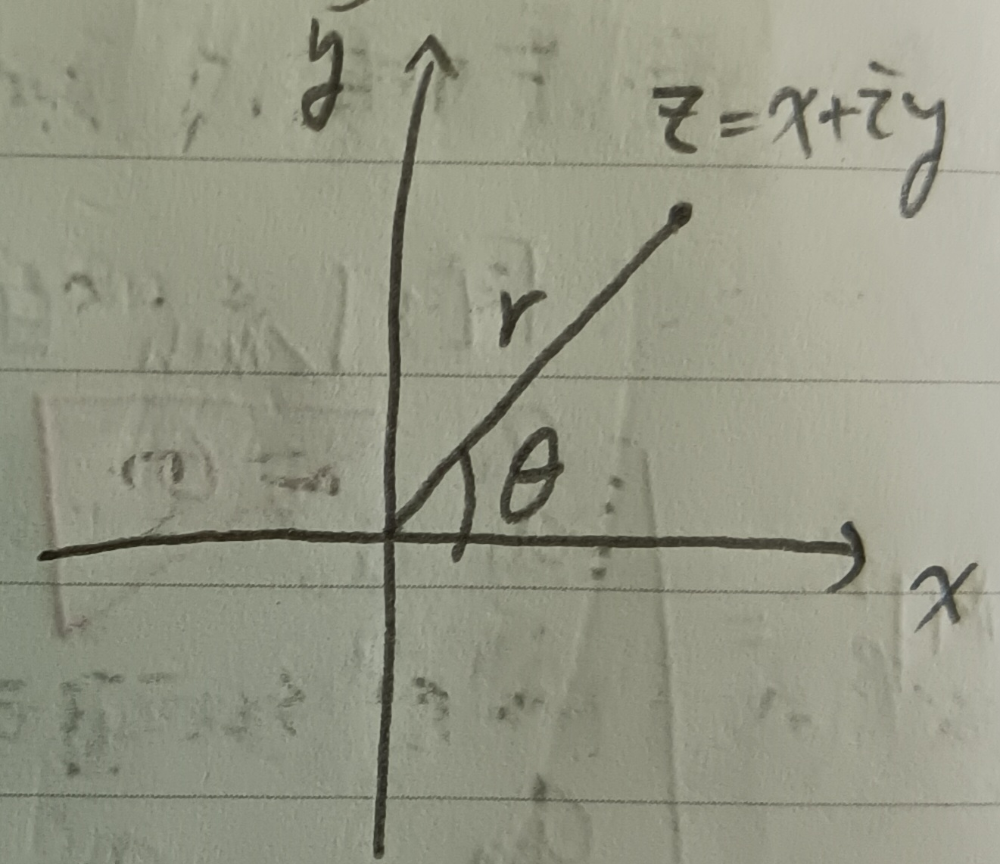
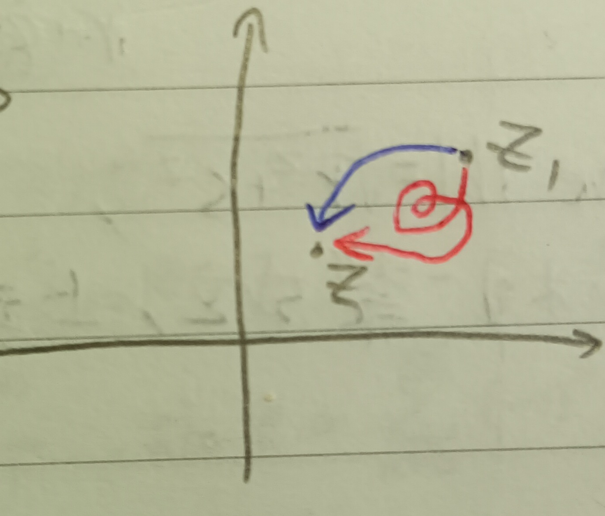
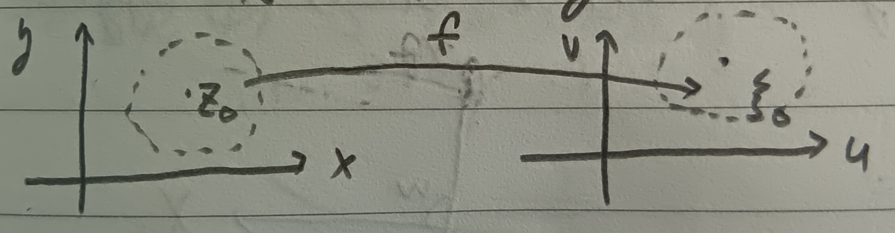
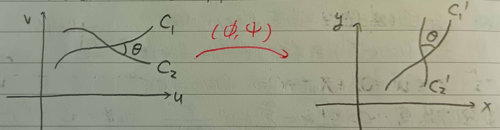
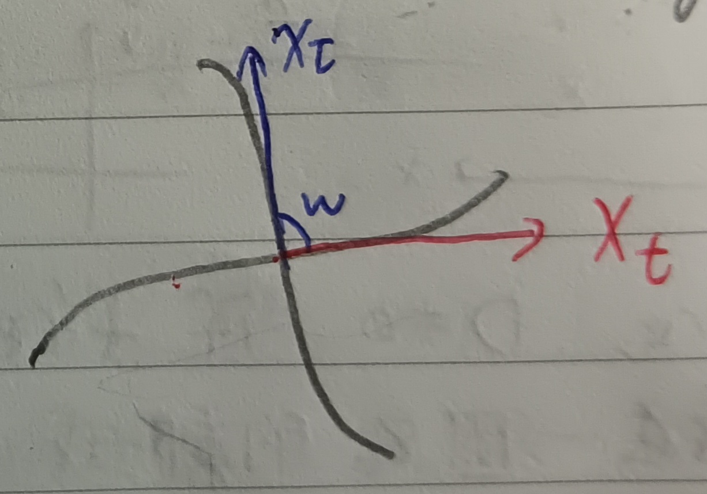
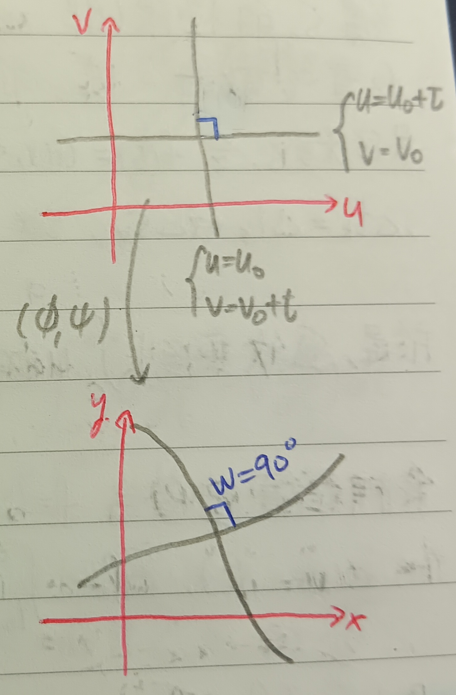

這份筆記是關於複變函數的定義與性質。
複數
定義 1：複數 (Complex Number)
我們將形如 \[ z=x+iy \] 的數稱為複數，其中\(x,y\in\mathbb{R}\), \(i^2=-1\)。
定義 1-1：實部 (Real Part)
在\(z=x+iy\)中，我們將\(x\)稱為\(z\)的實部，記為 \[ x=\mbox{Re } z \]
定義 1-2：虛部 (Imaginary Part)
在\(z=x+iy\)中，我們將\(x\)稱為\(z\)的實部，記為 \[ y=\mbox{Im } z \]
定義 1-3：共軛複數 (Conjugate)
對於\(z=x+iy\)，我們將\(\overline{z}=x-iy\)稱為其共軛複數。
定義 2：複數的極座標表示 (Polar Coordinate Representation of Complex Numbers)
我們可以把\(z=x+iy\)表為極座標形式，即令\(x=r\cos\theta\), \(y=\sin\theta\)，則 \[ z=r(\cos\theta+i\sin\theta) \] (見下圖1)。
定義 2-1：輻角 (Argument)
在\(z=r(\cos\theta+i\sin\theta)\)中，我們將\(\theta\)稱為\(z\)的輻角，記做 \[ \theta=\mbox{Arg }z \]
定義 2-2：絕對值 (Absolute Value)
在\(z=r(\cos\theta+i\sin\theta)\)中，我們將\(r\)稱為\(z\)的絕對值，有 \[ r=\sqrt{x^2+y^2}=\sqrt{z\cdot\overline{z}}=|z| \]
性質 2-2-1
對於複數\(z_1,z_2\)，有 \[ |z_1\times z_2|=|z_1||z_2| \] (證略)
性質 2-2-2：三角不等式 (Triangle Inequality)
對於複數\(z_1,z_2\)，有 \[ |z_1+z_2|\leq|z_1|+|z_2|, |z_1|-|z_2|\leq|z_1-z_2| \] (證略)
定義 3：複數數列的極限 (Limit of Complex Sequence)
對於一複數數列\(\{z_n\}\)，若\(|z_n-z_0|\to 0\)，我們說\(z_n\to z_0\)。
(也就是說，\(z_n\to z_0\) iff. \(z_n-z_0\)的實部和虛部都收斂到\(0\)。)
註記 3-1：柯西序列 (Cauchy Sequence)
和實數一樣，我們知道\(\{z_n\}\)收斂若且唯若給定任意\(\epsilon>0\)，存在\(N>0\)使得當\(n,m>N\)實總有\(|z_n-z_m|<\epsilon\) i.e. \(\{z_n\}\)是柯西序列(實數版本的證明可以見這裡的定理8：柯西準則)。
複級數
定義 4：複數級數的極限 (Limit of Complex Series)
考慮一複級數\(\sum\limits_{n=1}^\infty c_n\)。我們說\(\sum\limits_{n=1}^\infty c_n\)收斂到\(S\)，若\(S_n\)收斂到\(S\)，其中\(S_n=\sum\limits_{k=1}^n c_k\)。
註記 5：絕對收斂檢驗法 (Absolute Convergence Test)
對於複數列\(\{c_n\}\)，若\(\sum|c_k|\)收斂，則\(\sum c_k\)收斂(i.e. 若級數絕對收斂，則級數收斂。)(證略)
定義 6：一致收斂 (Uniform Convergence)
若\(\{c_k\}\)為一\(z\)的函數的數列(Ex：\(c_k=a_kz^k\))，且\(z\)取值於一個區域\(R\)上，則我們說\(\sum c_k\)一致收斂，若對於所有\(\epsilon>0\)，存在\(N>0\)使得對於所有\(n,m\geq N\), \(z\in R\)有\(|S_n(z)-S_m(z)|<\epsilon\)，其中\(S_n\)的定義同定義4。
例 6-1
考慮級數\(S=1+z+z^2+z^3+\cdots\)，其部分和為 \[ S_n=\frac{1-z^{n+1}}{1-z} \] 當\(|z|<1\)時，有\(S_n\to\frac{1}{1-z}\)，即此級數在\(|z|<1\)時絕對收斂。且對於所有\(q<1\)，此級數在\(|z|\leq q\)處都一致收斂。
定義 7：冪級數 (Power Series)
我們稱形如 \[ p(z)=\sum_{n=0}^\infty a_nz^n\mbox{ or }\sum_{n=0}^\infty a_n(z-z_0)^n \] 的級數為冪級數。
定理 8
若冪級數 \[
p(z)=\sum_{n=0}^\infty a_nz^n
\] 在\(z=\xi\)處收斂，則該級數在\(|z|<|\xi|\)處都收斂，且\(\forall q<1\)，此級數在\(|z|\leq q|\xi|\)處一致收斂。更甚者，冪級數
\[
D(z)=\sum_{n=1}^\infty na_nz^{n-1}\mbox{ and
}I(z)=\sum_{n=0}^\infty\frac{a_n}{n+1}z^{n+1}
\] 都會在\(|z|\leq
q|\xi|\)處一致收斂。(證略)
(這是這裡的定理4的複級數版)
定義 8-1：收斂半徑 (Radius of Convergence)
我們說\(\rho\)是某個冪級數的收斂半徑，若該級數在\(|z|<\rho\)處都收斂，且在\(|z|>\rho\)處都發散。(當\(|z|=\rho\)時，我們不去在乎級數的斂散性。)
於是當\(|z|<\rho\)時，\(p(z)=\sum\limits_{n=1}^\infty a_nz^n\)為一函數，其值為\(p_n(z)=\sum\limits_{k=0}^na_kz^k\)的極限值。
註記 9
給定冪級數 \[
p(z)=\sum_{n=1}^\infty a_nz^n
\] 則在其收斂半徑中，極限 \[
\lim_{z_1\to z}\frac{p(z_1)-p(z)}{z_1-z}
\] 存在。
證明：直覺感受上，沿用定理8的符號，有
\[
p'(z)=\sum_{n=1}^\infty
na_nz^{n-1}=\lim_{n\to\infty}p_n'(z)=\lim_{n\to\infty}D_n(z)=D(z)
\]
然而我們其實不能確定這裡微分和求和號是可以交換的，但我們可以在此猜測\(\frac{p(z_1)-p(z)}{z_1-z}\)的極限值會是\(D(z)\)。也就是說，我們希望說明\(D(z)\)和\(\frac{p(z_1)-p(z)}{z_1-z}\)的差可以任意小。
令 \[
D(z_1,z)=\frac{p(z_1)-p(z)}{z_1-z}=\frac{p_n(z_1)-p_n(z)}{z_1-z}+\sum_{k=n+1}^\infty
a_k\lambda_k
\] 其中 \[
\lambda_k=\frac{z_1^k-z^k}{z_1-z}=z_1^{k-1}+z_1^{k-2}z+z_1^{k-3}z^2+\cdots+z^{k-1}
\] 令\(|\xi|\)為\(p\)的收斂半徑，\(q<1\)，則對於\(|z|<q|\xi|\)與\(|z_1|<q|\xi|\)，有\(\lambda_k\leq
kq^{k-1}|\xi|^{k-1}\)。又\(\sum
a_k\xi^k\)收斂，故存在\(M\)使得對於所有\(k\)有\(|a_k\xi^k|\leq M\)。故 \[
|a_k||\xi|^{k-1}=\frac{1}{|\xi|}|a_k||\xi|^k\leq\frac{M}{|\xi|}
\] 於是 \[
\left|\sum_{k=n+1}^\infty a_k\lambda_k\right|\leq\sum_{k=n+1}^\infty
|a_k|\cdot k\cdot
q^{k-1}|\xi|^{k-1}\leq\frac{M}{|\xi|}\sum_{k=n+1}^\infty kq^{k-1}
\] 因為\(q<1\)，故當\(n\)很大時，可以有 \[
\left|\sum_{k=n+1}^\infty a_k\lambda_k\right|<\epsilon
\] 並且由定理8我們知道\(D_n(z)\)一致收斂到\(D(z)\)，故當\(n\)夠大時， \[
|D(z)-D+n(z)|<\epsilon
\] 且 \[
p_n'(z)=\sum_{k=1}^n ka_kz^{k-1}=D_n(z)
\] (有限和可以直接交換微分和求和)，並且 \[
\frac{a_kz_1^k-a_kz^k}{z_1-z}=a_k(z_1^{k-1}+\cdots+z^{k-1})
\] 意即在\(z_1\)夠靠近\(z\)時，\(\frac{a_kz_1^k-a_kz^k}{z_1-z}\)會很靠近\(ka_kz^{k-1}\)。故 \[
\frac{p_n(z_1)-p_n(z)}{z_1-z}=\sum_{k=1}^n\frac{a_kz_1^k-a_kz^k}{z_1-z}\to\sum_{k=1}^n
ka_kz^{k-1}=D_n(z)
\] 於是，我們可以挑足夠靠近\(z\)的\(z_1\) s.t. \[
\left|\frac{p_n(z_1)-p_n(z)}{z_1-z}-D_n(z)\right|<\epsilon
\] 於是， \[
|D(z_1,z)-D(z)|\leq\left|\frac{p_n(z_1)-p_n(z)}{z_1-z}-D_n(z)\right|+|D_n(z)-D(z)|+\left|\sum_{k=n+1}^\infty
a_k\lambda_k\right|<3\epsilon
\] 於是，有 \[
\lim_{z_1\to z}\frac{p(z_1)-p(z)}{z_1-z}=D(z)
\] QED
複變函數
定義 10：複變函數 (Complex Function)
我們說一個複函數\(f(z)=\xi\)的意思是在一個\(z\)的定義域\(R\)中，對於所有\(z\in R\)，都存在\(\xi\in\mathbb{C}\) s.t. \(f(z)=\xi\)，意即 \[
\begin{aligned}
f:x+iy&\to u+iv\\
z&\to f(z)=\xi=u+iv
\end{aligned}
\] (就是\(f:\mathbb{C}\to\mathbb{C}\)的函數)。並且這裡我們可以寫成
\[
f(z)=f(x+iy)=u(x,y)+iv(x,y)
\] 這裡\(u(x,y)\)和\(v(x,y)\)是實值函數。
(通常來說，我們會假設\(u,v,u_x,v_x,u_y,v_y\)都連續。)
定義 11：可微 (Differentiable)
我們說\(f(z)\)可微，若極限 \[ \lim_{z_1\to z}\frac{f(z_1)-f(z)}{z_1-z}\equiv f'(z) \] 存在。
註記 11-1
其實在複變的世界裡可為是很強的條件，因為\(z_1\)有無窮多條路徑可以逼近到\(z\)(見下圖2)。
例 11-1-1
考慮函數\(f(x+iy)=x\)，則由實軸逼近，有 \[ \begin{aligned} \lim_{r\to 0}\frac{f(z+r)-f(z)}{r}&=\lim_{r\to 0}\frac{x+r-x}{r}\\ &=1,\mbox{ where }r\in\mathbb{R} \end{aligned} \] 但由虛軸逼近，又有 \[ \begin{aligned} \lim_{s\to 0}\frac{f(z+is)-f(z)}{is}&=\lim_{r\to 0}\frac{x-x}{is}\\ &=0,\mbox{ where }s\in\mathbb{R} \end{aligned} \] 可以發現\(f\)不可微。
定理 12：柯西-黎曼方程 (Cauchy-Riemann Equations)
令\(f(x+iy)=u(x,y)+iv(x,y)\)，則\(f\)在\(z=x+iy\)可微若且唯若 \[ u_x=v_y,u_y=-v_x \]
定義 12-1：解析 (Analytic)
若\(f\)在一區域\(R\)上滿足柯西-黎曼方程，則稱\(f\)在\(R\)上解析，且 \[ f'(z)=u_x+iv_x=v_y-iu_y \]
證明：假設\(f'(z)\)存在，則 \[
\begin{aligned}
f'(z)&=\lim_{r\to
0}\left[\frac{u(x+r,y)-u(x,y)}{r}+i\frac{v(x+r,y)-v(x,y)}{r}\right]\\
&=u_x+iv_x,\mbox{ where }r\in R
\end{aligned}
\] 並且 \[
\begin{aligned}
f'(z)&=\lim_{s\to
0}\left[\frac{u(x,y+s)-u(x,y)}{is}+i\frac{v(x,y+s)-v(x,y)}{is}\right]\\
&=\frac{1}{i}(u_y+iv_y)=v_y-iu_y,\mbox{ where }s\in R
\end{aligned}
\] 實虛對應，有\(u_x=v_y,u_y=-v_x\)。
反過來說，考慮
\[
\begin{aligned}
\frac{f(z+h)-f(z)}{h}&=\frac{u(x+r,y+s)-u(x,y)}{r+is}+i\frac{v(x+r,y+s)-v(x,y)}{r+is}\\
&=\frac{1}{r+is}[ru_x+su_y+irv_x+isv_y+\epsilon_1|h|+i\epsilon_2|h|]
\end{aligned}
\] 其中\(|h|=\sqrt{r^2+s^2}\)，且當\(|h|\to 0\)時\(\epsilon_1,\epsilon_2\to 0\)。
若柯西-黎曼方程成立，則 \[
\begin{aligned}
&\frac{1}{r+is}[ru_x+su_y+irv_x+isv_y+\epsilon_1|h|+i\epsilon_2|h|]\\
&=u_x+iv_x+\underbrace{\epsilon_1\times\frac{|h|}{r+is}}_{\to
0}+\underbrace{i\epsilon_2\times\frac{|h|}{r+is}}_{\to 0}\\
&\to u_x+iv_x
\end{aligned}
\] 這與\(h\)的逼近路徑無關，即\(f(z)\)可微。QED
註記 12-1
由柯西-黎曼方程知若\(f\)和\(g\)都解析，則\(f+g\), \(f-g\), \(fg\), \(f/g\)也都解析(除法需要要求\(g\neq 0\))。
引理 13
若一解析函數在一區域\(R\)上的微分都是零，則\(f(z)\)是常數函數。
證明：由於\(f'(z)=0\)，故在\(R\)上總有\(v_y-iu_y=0\)，意即 \[ v_y\equiv 0, u_y\equiv 0 \] 同理有\(v_x=0=u_x\)，故知\(u\)和\(v\)都是常數，即\(f\)為常數。QED
基本的複變函數
定義 14：指數函數 (Exponential Function)
定義 \[ e^z=\sum_{k=0}^\infty\frac{z^k}{k!}=1+z+\frac{z^2}{2!}+\frac{z^3}{3!}+\cdots \] 很容易可以發現其收斂半徑為無窮大(這裡的例12)，故可以對其逐項微分(註記9)，即 \[ \frac{d}{dz}e^z=1+z+\frac{z^2}{2!}+\cdots=e^z \] 和原本實數上的指數函數是一樣的。
註記 14-1
這樣定義的指數函數滿足指數律\(e^ze^\xi=e^{z+\xi}\)。
證明：固定\(\xi\in\mathbb{C}\)，令\(f(z)=e^z\)，則 \[ \begin{aligned} \frac{d}{dz}e^{z+\xi}e^{-z}&=\frac{d}{dz}f(z+\xi)f(-z)\\ &=f'(z+\xi)f(-z)+f(z+\xi)(-f'(-z))\\ &=f(z+\xi)f(-z)-f(z+\xi)f(-z)\;\;(f=f')\\ &=0 \end{aligned} \] 於是，\(e^{z+\xi}e^{-z}\)是常數。代入\(z=0\)，即得\(e^ze^\xi=e^{z+\xi}\)。QED
註記 14-1-1
若有函數滿足\(f'(z)=f(z)\)，則 \[ \frac{d}{dz}(f(z)e^{-z})=f'(z)e^{-z}-f(z)e^{-z}=0 \] 故\(f(z)e^{-z}\)為常數，即\(f(z)=ce^z\)。
定義 15：三角函數 (Trigonometric Functions)
我們令 \[ \cos z=\sum_{n=0}^\infty (-1)^n\frac{z^{2n}}{(2n)!}, \sin z=\sum_{n=0}^\infty (-1)^n\frac{z^{2n+1}}{(2n+1)!} \]
註記 15-1
大概移項一下會有\(e^{iz}=\cos z+i\sin z\)，故\(e^{-iz}=\cos z-i\sin z\)(即這裡的引理6(歐拉公式)適用於\(z\)為複數的狀況)。故有 \[ 1=e^{iz}e^{-iz}=\cos^2 z+\sin^2 z \]
註記 15-2
對於\(x,y\in\mathbb{R}\)，有 \[ e^z=e^x(\cos y+i\sin y) \] 則令\(z=x+iy\)，有 \[ |e^z|=|e^x||\cos y+i\sin y|=e^x \] 即\(|e^z|=e^{(z\mbox{的實部})}\)。
保角性質
回想 16
令\(f(x+iy)=u+iv=u(x,y)+iv(x,y)\)為解析函數，可以把這種函數想成\(f:(x,y)\to (u,v)\)，於是可以考慮雅可比行列式 \[ \begin{aligned} D=\frac{\partial(u,v)}{\partial(x,y)}&=u_xv_y-u_yv_x\\ &=u_x^2+v_x^2\mbox{ (柯西-黎曼方程(定理12))}\\ &=|f'(z)|^2 \end{aligned} \] 於是，當\(f'(z)\neq 0\)時\(D\neq 0\)。由反函數定理(這裡的定理5)，若\(f'(z_0)\neq 0\)，則存在一個\(z_0\)的鄰域 s.t. 在那個鄰域中\(f\)一對一地打到\(\xi_0=f(z_0)\)的一個鄰域(見下圖3)。
定義 17：保角 (Conformal)
令\(c_1,c_2\)是\((u,v)\)平面的任意兩條曲線，且\(x=\phi(u,v), y=\psi(u,v)\)。又\(c_1, c_2\)經\((\phi,\psi)\)映射後映射到\((x,y)\)平面上的兩曲線\(c_1'\)和\(c_2'\)。則我們說\((\phi,\psi)\)是保角的，若\(c_1,c_2\)的夾角總是等於\(c_1', c_2'\)的夾角(見下圖4)。
回想 18
考慮曲線\(\left\{\begin{aligned}u&=u(t)\\v&=v(t)\end{aligned}\right.\)，它們被\(X=(\phi,\psi)\)打過去形成的曲線是 \[ \left\{ \begin{aligned} x&=\phi(u(t),v(t))=x(t)\\ y&=\psi(u(t),v(t))=y(t) \end{aligned} \right. \] 這條曲線在\(xy\)平面上的切線向量可以寫為(見這裡的註記3-1)： \[ X_t=(x_t,y_t)=\left(x_u\frac{du}{dt}+x_v\frac{dv}{dt},y_u\frac{du}{dt}+y_v\frac{dv}{dt}\right) \] 我們把它記為 \[ \left(x_u\frac{du}{dt}+x_v\frac{dv}{dt},y_u\frac{du}{dt}+y_v\frac{dv}{dt}\right)\equiv X_u\frac{du}{dt}+X_v\frac{dv}{dt} \] 若給定另一曲線\(u=u(\tau), v=v(\tau)\)，則其在\(xy\)平面上的曲線有切線向量 \[ X_\tau=X_u\frac{du}{d\tau}+X_v\frac{dv}{d\tau} \] 令這兩條\(xy\)平面上的曲線有夾角\(w\)(見下圖5)，則 \[ \cos w=\frac{X_t\cdot X_\tau}{|X_t||X_\tau|} \]
並且有 \[ X_t\cdot X_\tau=E\frac{du}{d\tau}\frac{du}{dt}+F\left(\frac{du}{dt}\frac{dv}{d\tau}+\frac{du}{d\tau}\frac{dv}{dt}\right)+G\frac{dv}{dt}\frac{dv}{d\tau} \] 其中 \[ \begin{aligned} E&=\left(\frac{\partial x}{\partial u}\right)^2+\left(\frac{\partial y}{\partial u}\right)^2=\phi_u^2+\psi_u^2\\ F&=\frac{\partial x}{\partial u}\frac{\partial x}{\partial v}+\frac{\partial y}{\partial u}\frac{\partial y}{\partial v}=\phi_u\phi_v+\psi_u\psi_v\\ G&=\left(\frac{\partial x}{\partial v}\right)^2+\left(\frac{\partial y}{\partial v}\right)^2=\phi_v^2+\psi_v^2 \end{aligned} \]
定理 19
\((\phi,\psi)\)是保角的若且唯若其滿足柯西-黎曼方程，即 \[ \phi_u-\psi_v=0, \phi_v+\psi_u=0 \]
證明：假設\(X=(\phi,\psi)\)是保角的，則首先考慮倆互相垂直的線 \[ \left\{ \begin{aligned} u&=u_0\\ v&=v_0+t \end{aligned} \right.\mbox{ and }\left\{ \begin{aligned} u&=u_0+\tau\\ v&=v_0 \end{aligned} \right. \] 其中\(u_0\)和\(v_0\)為常數。由回想18，這兩條曲線的夾角\(w\)有 \[ \cos w=\frac{E\cdot 0+F\cdot 1+G\cdot 0}{|X_t||X_\tau|} \] 又已知\(w=\pi/2\)(見下圖6)，故\(\cos w=0\), \(F=0\)。於是 \[ \phi_u\phi_v+\psi_u\psi_v=0\mbox{ (☆)} \]
類似的，考慮另外一組垂直曲線 \[
\left\{
\begin{aligned}
u&=u_0+t\\
v&=v_0+t
\end{aligned}
\right.\mbox{ and }\left\{
\begin{aligned}
u&=u_0+\tau\\
v&=v_0-\tau
\end{aligned}
\right.
\] 會得到\(E-G=0\)，即 \[
\phi_u^2+\psi_u^2-\phi_v^2-\psi_v^2=0\mbox{ (★)}
\] 由(☆)式，可以令\(\phi_u=\lambda\psi_v,
\phi_v=-\lambda\psi_u\)。而把這塞進(★)式，可以求得\(\lambda=\pm 1\)。無論是\(+1\)或\(-1\)，\((\phi,\psi)\)都滿足柯西-黎曼方程。
反過來說，若\((\phi,\psi)\)滿足柯西-黎曼方程，則有\(E=G\geq 0\)與\(F=0\)。則對於\(uv\)平面上的任兩條曲線來說，它們在\(xy\)平面上對應到的曲線夾角\(w\)滿足 \[ \cos w=\frac{\frac{du}{dt}\frac{du}{d\tau}+\frac{dv}{dt}\frac{dv}{d\tau}}{\sqrt{\left(\frac{du}{dt}\right)^2+\left(\frac{dv}{dt}\right)^2}+\sqrt{\left(\frac{du}{d\tau}\right)^2+\left(\frac{dv}{d\tau}\right)^2}} \] 而這很顯然是一開始兩曲線的夾角(見這裡的註記3-1)，即\((\phi,\psi)\)是保角的。QED